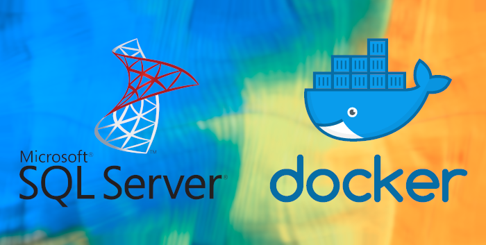
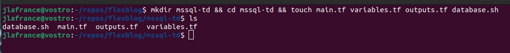
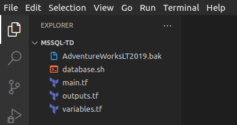
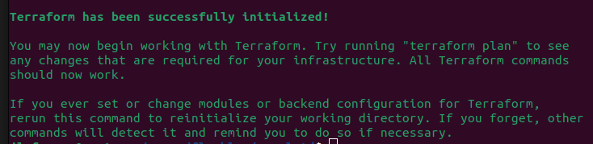
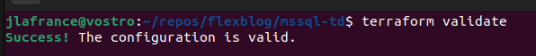
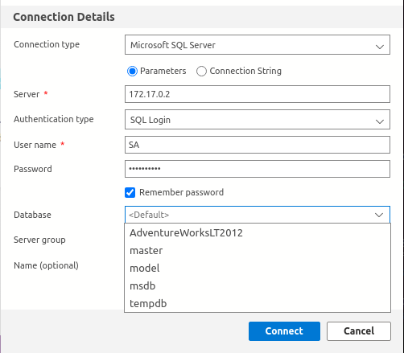

SQL Server database using Terraform & Docker locally Ubuntu 22.04
Auther: jldroid19

This post we will be building a Docker container running SQL Server using Terraform as our provisioner.
Source code: https://github.com/jldroid19/mssql-td
Required OS and Software
- Ubuntu 22.04 (This may work on Ubuntu 20.04 as well, no gurantees)
- Docker engine: https://docs.docker.com/engine/install/ubuntu/
- Terraform: https://developer.hashicorp.com/terraform/tutorials/aws-get-started/install-cli
- (Optional) Azure Data Studio: https://learn.microsoft.com/en-us/sql/azure-data-studio/download-azure-data-studio?view=sql-server-ver16
Needed files
A copy of the AdventureWorksLT2019.bak which can be retrieved from here: https://learn.microsoft.com/en-us/sql/samples/adventureworks-install-configure?view=sql-server-ver16&tabs=ssms
Okay let's go ahead and start mapping out our file structure.
Open a terminal and create the folder and files needed.

- main.tf (define the provider and resources)
- variables.tf (set variables that will be used to describe the container)
- outputs.tf (tailor some container information to print to the terminal.
- database.sh (bash script used to provision the container with the AdventureWorks database)
- Now go ahead and open up the mssql-td directory with your preferred code editor. You should have something similar to the image below.

- Let's go ahead and start with our main.tf configuration.
mssql-td/main.tf
terraform {
required_providers {
docker = {
source = "kreuzwerker/docker"
version = "~> 2.13.0"
}
}
}
provider "docker" {}
resource "docker_image" "mssql" {
name = "mcr.microsoft.com/mssql/server:2019-latest"
keep_locally = true
}
resource "docker_container" "mssql" {
image = docker_image.mssql.name
name = var.container_name
env = ["ACCEPT_EULA=Y", "MSSQL_SA_PASSWORD=Password1!"]
provisioner "local-exec" {
command = "sh ./database.sh"
}
}
- Quick overview of the main.tf file
- required_providers - (this is the porvider we will be using to allow Terraform to communicate with docker engines api.)
- provider - (telling Terraform that we will be using docker to build this database.)
- resource "docker_image" - (Defining which image we will be pulling down from docker hub, and telling terraform to keep the image locally even after a terraform destroy.)
- resource "docker_container" - (telling Terraform to use the above image resource for our container, the name of the container which we'll declare as a variable in out variables.tf file. The env value is very important because it accepts the EULA and sets our database password right away. Keepign the password in plain text like this is not recommended for production use.). Now the last bit is the provisioner. Thi is the most important peice of what we're doing. This will call on the database.sh script which has commands that will be executed inside out container during the terraform apply.
- Now let's set our containers 'name' variable. Below is what we want our variables.tf to look like.
mssql-td/variables.tf
variable "container_name" {
description = "MSSQL database, Docker container"
type = string
default = "mssql"
}
- Let's talk about what we have written above.
-
We declared a variable called "container_name" which looks familiar to what is in our main.tf.
-
In our "container_name" variable block we defined what that variable consists of.
-
description - A short description of what this container is or what purpose it serves.
-
type - string (We want this variable to be of string type)
-
default - The name of our container
- Now let's configure our outputs.tf file. This will give us a place to tailor any output we want about the container to the terminal after we terraform apply. Go ahead and place the below blocks in your outputs.tf file.
mssql-td/outputs.tf
output "container_id" {
description = "ID of the Docker container"
value = docker_container.mssql.id
}
output "image_id" {
description = "ID of the Docker image"
value = docker_image.mssql.id
}
- Quick overview of the outputs.tf file
- "container_id" (Gets the container id and prints it to the terminal)
- "image_id" (Gets the image the container is using and prints it to the terminal.)
- Now the final piece to the puzzle is the database.sh script. Place the below in your database.sh file.
mssql-td/database.sh
#!/bin/bash
echo "Let's configure this container!"
uname=SA
pwrd=Password1!
bakitup=AdventureWorksLT2019.bak
echo "Creating backup directory"
docker exec -i mssql mkdir /var/opt/mssql/backup
echo "Copying .bak to container"
docker cp AdventureWorksLT2019.bak mssql:/var/opt/mssql/backup
echo "LOADING DATABASE LOGICAL FILES"
docker exec -i mssql /opt/mssql-tools/bin/sqlcmd -S localhost -U $uname -P $pwrd -Q 'RESTORE FILELISTONLY FROM DISK = "/var/opt/mssql/backup/'$bakitup'"' | tr -s ' ' | cut -d ' ' -f 1-2
echo "RESTORING DATABASE"
docker exec -i mssql /opt/mssql-tools/bin/sqlcmd -S localhost -U $uname -P $pwrd -Q 'RESTORE DATABASE AdventureWorksLT2012 FROM DISK = "/var/opt/mssql/backup/'$bakitup'" WITH MOVE "AdventureWorksLT2012_data" TO "/var/opt/mssql/data/AdventureWorksLT2019.mdf", MOVE "AdventureWorksLT2012_Log" TO "/var/opt/mssql/data/AdventureWorksLT2012_log.ldf"'
echo "DATABASE CONNECTION INFORMATION"
echo "Container IP: "
docker inspect -f '{{range .NetworkSettings.Networks}}{{.IPAddress}}{{end}}' mssql
echo "Username: " $uname
echo "Password: " $pwrd
- Quick overview of the database.sh script
- mkdir in the container for the AdventureWorksLT2019.bak file to live
- cp the AdventureWorksLT2019.bak file into the container
- exec the restore of the logical files needed for the full database restore to occur.
- exec the restore of the whole database.
Note: if you are using a different database you'll need to change the database name and logical file names.
-
Okay I think we are in a good spot to build this container using terraform.
-
Open a terminal and let's start building this thing.
- Let's initialize the Terraform project using:
terraform init - Now let's cleanup our file formats with: terraform fmt (If no output is present then that means your formatting is good to go.
- Let's validate our configuration with:
terraform validate - Let's execute plan to see what were lookign at:
terraform plan
Terraform used the selected providers to generate the following execution plan. Resource actions are indicated with the following
symbols:
+ create
Terraform will perform the following actions:
# docker_container.mssql will be created
+ resource "docker_container" "mssql" {
+ attach = false
+ bridge = (known after apply)
+ command = (known after apply)
+ container_logs = (known after apply)
+ entrypoint = (known after apply)
+ env = [
+ "ACCEPT_EULA=Y",
+ "MSSQL_SA_PASSWORD=Password1!",
]
+ exit_code = (known after apply)
+ gateway = (known after apply)
+ hostname = (known after apply)
+ id = (known after apply)
+ image = "mcr.microsoft.com/mssql/server:2019-latest"
+ init = (known after apply)
+ ip_address = (known after apply)
+ ip_prefix_length = (known after apply)
+ ipc_mode = (known after apply)
+ log_driver = "json-file"
+ logs = false
+ must_run = true
+ name = "mssql"
+ network_data = (known after apply)
+ read_only = false
+ remove_volumes = true
+ restart = "no"
+ rm = false
+ security_opts = (known after apply)
+ shm_size = (known after apply)
+ start = true
+ stdin_open = false
+ tty = false
+ healthcheck {
+ interval = (known after apply)
+ retries = (known after apply)
+ start_period = (known after apply)
+ test = (known after apply)
+ timeout = (known after apply)
}
+ labels {
+ label = (known after apply)
+ value = (known after apply)
}
}
# docker_image.mssql will be created
+ resource "docker_image" "mssql" {
+ id = (known after apply)
+ keep_locally = true
+ latest = (known after apply)
+ name = "mcr.microsoft.com/mssql/server:2019-latest"
+ output = (known after apply)
+ repo_digest = (known after apply)
}
Plan: 2 to add, 0 to change, 0 to destroy.
Changes to Outputs:
+ container_id = (known after apply)
+ image_id = (known after apply)
- Okay I think everthing checks out. Let's apply it: terraform apply Enter a value: yes
Note: If you get an error make sure your database.sh script is executable (chmod +x database.sh) 
- The container has been successfully built and the AdventureWorks database has been restored.
Note: the Container IP and Username/Password. Let's go ahead and launch Azure Data Studio to see if we can connect to this new container.
-
Click 'New' then 'new connection'. Fill in the connection info, then click 'Connect'.

-
Select 'Databases' and you'll see the AdventureWorksLT2012 database available for use.
-
Clean up when done: terraform destroy
Conclusion
This terraform - docker configuration should not be used for production. This is purely a way to quickly restore past backup databases into a container. Allowing you to interact with actual operational data at a very low cost. I found this especially useful when developing applications geared towards data analysis. Just remember once you execute terraform destroy this database and any changes you have made to it will be gone. Great for quick database structure access without exposing your cloud development/production environments to developers. Also, it's super free!!!!!!!